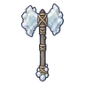

โกเลมก้อนเกลือ · ร่างเกลือชมพู
มอนธาตุดิน Lv 38–48
เจอที่
| แมพ | โซน | Lv | ภูมิภาค |
|---|---|---|---|
| นาเกลือขาว | 38–48 | ดินแดนเหนือ |
ค่าสถานะตามเลเวล
| Lv | HP | ATK | DEF | MDEF | EXP | Job |
|---|---|---|---|---|---|---|
| 38 | 12,160 | 90–136 | 27 | 7 | 109 | 82 |
| 43 | 17,227 | 106–158 | 31 | 8 | 121 | 91 |
| 48 | 23,498 | 117–176 | 35 | 9 | 133 | 100 |
ตีด้วยธาตุไหนดี
แรงขึ้น: ไฟ ×1.5 พิษ ×1.25
เบาลง: ลม ×0.5 ดิน ×0.25
วัตถุดิบที่ดรอป
| ของ | โอกาส | |
|---|---|---|
| ก้อนผลึกเกลือ | 82% | 1 ชิ้น (15% ได้ 2) |
อุปกรณ์ที่ดรอป (1)
| ของ | โอกาส |
|---|---|
 ขวานยักษ์ก้อนเกลือ | 0.5% |
สกิล
ร่างแข็ง (Lv 25+) · ร่างแข็ง (Lv 60+) · ทุบพื้น (Lv 60+)